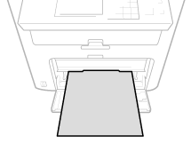
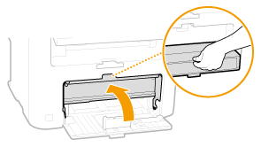
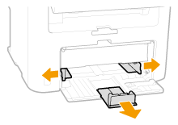
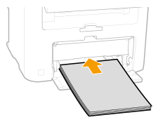
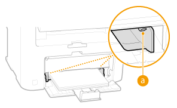
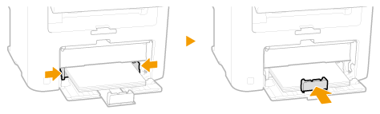
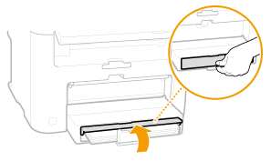
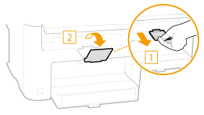

Load the paper that you usually use in the paper drawer. When you want to print on paper that is not loaded in the paper drawer, load the paper in the manual feed slot.
|
Make sure to load paper in portrait orientation
Paper cannot be loaded in landscape orientation. Make sure to load the paper in portrait orientation.

|
1
Lift the dust cover.

2
Slide the paper guides apart.

Size abbreviations on the paper guides
The abbreviations on the paper guides in the paper drawer indicate paper sizes as follows:
LGL: Legal
LTR: Letter
STMT: Statement
EXEC: Executive
3
Insert the paper into the paper drawer until the paper stops.
Fan the paper stack well, and tap it on a flat surface to align the edges.

Do not exceed the load limit guide when loading paper
Make sure that the paper stack does not exceed the load limit guide (). Loading too much paper can cause paper jams.

4
Align the paper guides against the edges of the paper.
Move the paper guides in so they are exactly the width of the paper.

Align the paper guides securely against the edges of the paper
Paper guides that are too loose or too tight can cause misfeeds or paper jams.
5
Lower the dust cover.
When Legal size paper is loaded
The paper guides at the rear edge of the paper will be extended. Open the dust cover extension, then lower the dust cover.

6
Pull out the paper stopper to open.

»
When changing the paper size or type
The factory default settings for paper size and type are <LTR> and <Plain (16 lb Bond-24 lb Bond)>, respectively. If you load a different size or type of paper into the machine, make sure to change the settings. If you do not change the settings, the machine cannot print properly.
|
Printing on the Back Side of Printed Paper (Manual 2-Sided Printing)
|
|
You can print on the back side of printed paper. Flatten any curls on the printed paper and insert it into the manual feed slot, with the side to print face up (previously printed side face down).
Load one sheet at a time per each print.
You can use only the paper printed with this machine.
You cannot print on the side that has previously been printed on.
If you are using A5 paper, the reverse side may not be printed correctly.
|